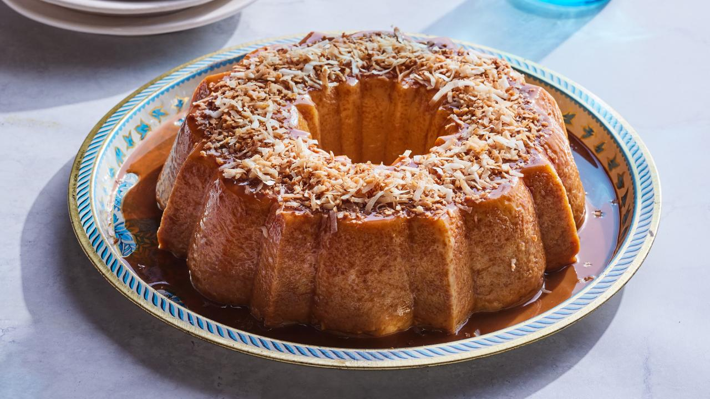

Coconut Flan Recipe

Description
Indulge your senses in the creamy and exotic delight of our Coconut Flan! Immerse yourself in the
luscious fusion of velvety caramel and tropical coconut, expertly crafted to create a dessert that's a symphony of rich flavors.
Ingredients
- Vegetable oil cooking spray
- 1 cup cajeta* or caramel sauce, at room temperature
- 3 (14-ounce) cans sweetened condensed milk
- 1 (14-ounce) can unsweetened coconut milk
- 1 (12-ounce) can evaporated milk
- 1 teaspoon baking powder
- 6 large eggs, at room temperature
- 1 tablespoon vanilla extract
- 1/2 teaspoon salt
- 1/2 cup shredded sweetened coconut, toasted
Steps
- Preheat the oven to 350 degrees F. Spray a 10-cup Bundt or tube pan with vegetable oil cooking spray.
- Drizzle the cajeta into the prepared pan, turning to coat the bottom and sides. Set aside.
- Using an electric mixer, beat the milks, eggs, vanilla extract, and salt. Pour the mixture into the pan. Place the pan inside a large roasting pan.
Fill the roasting pan with enough water to come halfway up the sides. Cover the Bundt pan with foil.
- Bake until the center jiggles slightly when pan is moved, about 1 hour 40 minutes.
Remove from the oven and let cool at room temperature for 30 minutes. Refrigerate, covered, for 3 hours or overnight.
- Turn the flan out onto a platter. Sprinkle with toasted coconut and serve.